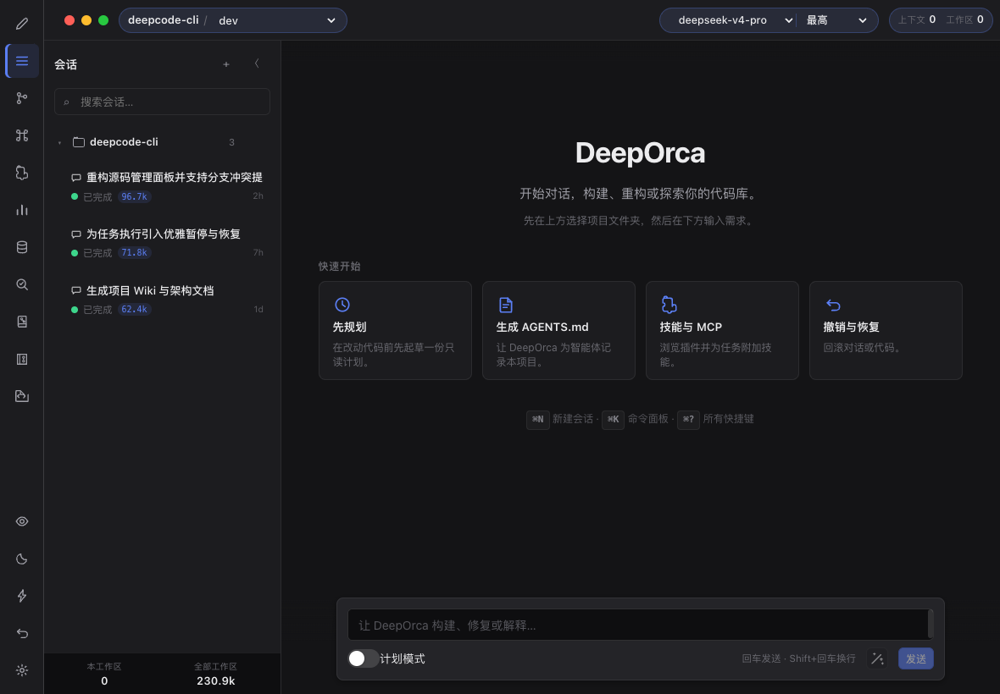
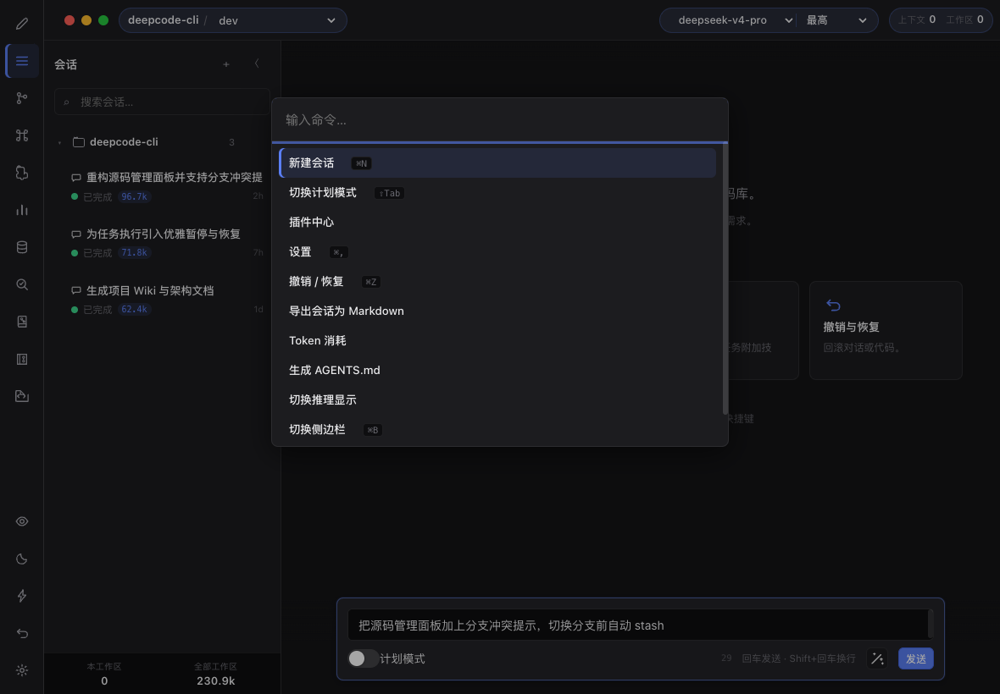

原型设计
用自然语言描述需求，AI 生成可交互的原型。支持表单、看板、多页面导航，双向交互验证用户流程。
"帮我搭一个看板管理原型"
AI 驱动的创作 Studio。原型设计、UI 设计稿、智能编码三大能力独立可用，按需组合。
专为 deepseek-v4 优化，以 Electron 桌面客户端为主要形态。
› 帮我设计一个用户登录页面
◆ render_design · .dd 格式设计稿已生成
✓ 支持响应式布局，Tailwind 内置
›
无论你想搭建交互原型、生成 UI 设计稿，还是直接进入代码研发——三大能力各自独立，从任意一个切入即可
用自然语言描述需求，AI 生成可交互的原型。支持表单、看板、多页面导航，双向交互验证用户流程。
生成自包含的 HTML 设计稿，3 种设计系统、14 种 UI 风格、Tailwind 内置。可脱离宿主独立交付。
DeepSeek 驱动的会话式编码：7 个内置工具、MCP 协议无限扩展、Monaco 编辑器、Git 集成、代码索引。
编码、设计、原型所需的一切都封装在一个桌面客户端里
气泡对话、思考卡片、工具/终端/JSON 渲染、计划模式、Token 消耗面板 — AI 的每一步都清晰可见。
内嵌 VS Code 同款 Monaco Editor：语法高亮、智能提示、文件树浏览，AI 修改即刻查看、即刻编辑。
内置 Git 面板：暂存、提交、分支切换、提交历史两级浏览、diff 语法高亮。
CodeGraph 索引让 AI 精准理解项目结构，OpenWiki 自动生成项目知识库，索引进度实时可视。
输入 GitHub 仓库地址即可生成本地 MCP 服务器，SQLite FTS5 全文索引实现毫秒级语义搜索。
多项目并行管理，会话自动持久化，文件历史支持一键撤销 AI 修改，会话可导出归档。
海洋清新默认呈现，一键切换 Aqua、Glass Prism 玻璃拟态、Punk 2077 赛博朋克，支持日夜模式。
简体中文、繁体中文（台/港）、English、日本語、한국어多种界面语言，自动跟随系统偏好。
Skills · MCP · 内置插件，三大扩展机制并行
SKILL.md 驱动的 Agent 能力扩展，项目与用户两级作用域，内置 Dart / Flutter 等技能包。
通过 Model Context Protocol 连接 GitHub、浏览器、数据库等外部服务，无限扩展工具能力。
随 DeepOrca 一起发布的核心能力扩展，始终可用：浏览器自动化、代码审查、仓库索引。
从 GitHub Releases 下载对应平台安装包，或从源码构建：
$ git clone https://github.com/d2rabbit/deepOrca.git $ cd deepOrca && npm install $ npm run desktop:start
在应用「设置」面板填写模型信息，或编辑 ~/.deeporca/settings.json：
{
"env": {
"MODEL": "deepseek-v4-pro",
"BASE_URL": "https://api.deepseek.com",
"API_KEY": "sk-..."
},
"thinkingEnabled": true,
"reasoningEffort": "max"
}
打开 DeepOrca，选择项目文件夹。无论你想设计原型、生成 UI 稿，还是编写代码——输入需求，虎鲸为你创作。
一屏尽收的创作工作台


